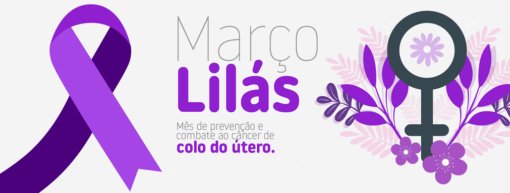

O Março Lilás é uma campanha para conscientizar sobre o câncer de colo do útero, promovida pelo Ministério da Saúde. A iniciativa tem o objetivo de alertar sobre os fatores de risco, informar sobre os métodos de prevenção e estimular o diagnóstico precoce.
A prevenção começa cedo, e proteger crianças e adolescentes contra o HPV é fundamental. A vacina e o exame preventivo Papanicolau são as formas mais eficazes de evitar a doença e garantir um futuro mais saudável.
A infecção pelo HPV geralmente ocorre logo após o início da vida sexual, tornando essencial a vacinação na infância e adolescência, antes da exposição ao vírus. Como o câncer de colo do útero é causado, na maioria dos casos, por infecções persistentes por tipos de HPV de alto risco, a imunização precoce reduz drasticamente as chances de desenvolver a doença na fase adulta. Por isso, proteger crianças e adolescentes contra o HPV hoje significa prevenir casos de câncer no futuro.